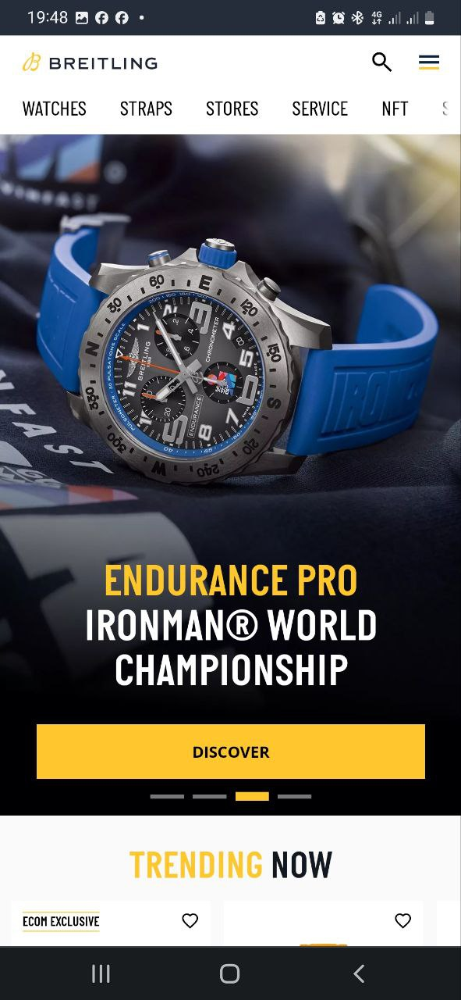
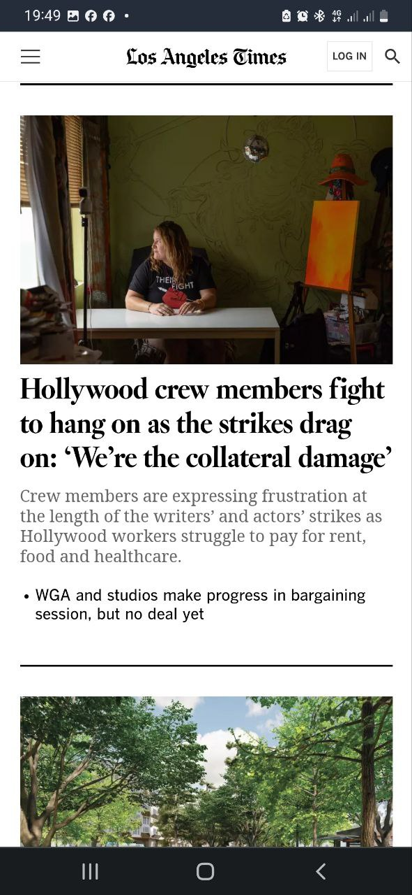

White Space and Clean Design
Aple
www.apple.comApple’s white space lets the products take center stage. The clean, white background sets the stage for a dynamic and stunning user experience and user journey. The product photography is eye-catching, and the simple text adds enough context for the design to shine.
AApple makes excellent use of white space to highlight their gorgeous products. In this example, white adds cleanliness to the negative space that makes up most of the design. It grabs attention immediately, fostering an atmosphere of excited anticipation.
Rule of Thirds
Breitling
www.breitling.com TThis Breitling watch web design does a great job at keeping the key information near or on the grid’s hotspots.
The placement of the images, text, and video link is not only visually appealing and dynamic, but help users quickly recognize what products are being showcased and how to learn more about them.
PARC: Proximity
Los Angeles Times
www.latimes.com This site uses "proximity" web design techniques. From the first second, we see information (navigation, article heads, their descriptions, etc.). However, these pieces of information are organized into a hierarchy and logically grouped, which is easier to read and scan.
A website that uses proximity in its architecture and design does not overwhelm the user with information.